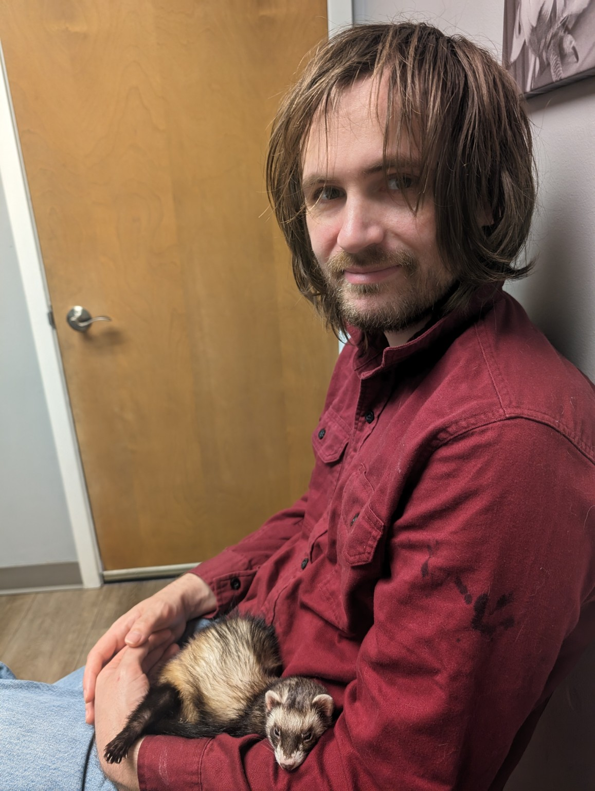

About Shamus

Meet Shamus
Shamus is a kind, creative, and hardworking person who enjoys drawing, video games, and tabletop gaming.
Biography
Shamus is a kind, creative, and hardworking person who enjoys drawing, video games, and tabletop gaming. He can be quiet when meeting new people, but he enjoys helping others and tries to treat everyone with respect. He considers himself dependable, thoughtful, and resourceful.
Shamus became interested in drawing when he was younger. He often sketched during class when bored. Over time, drawing became one of his favorite hobbies. He ejoys creating original characters, abstract designs, and fantasy creatures using ideas from his imagination.
His father introduced him to video games and tabletop gaming when he was young. Today, Shamus enjoys playing role-playing, strategy, and science fiction games on Steam. He also plays horror games with his girlfriend, even though they scare him. Games like Phasmophobia often make him jump or scream while his girlfriend remains oddly calm. Despite this, they enjoy playing together.
Shamus has several accomplishments that are important to him. During school, he helped design part of an addition to Thomas Jefferson High School through "Project Lead the Way". His work was later used in the building's constuction of the addition. As a teenager, he also donated winnings from art competitions to help the Boys & Girls Club in Council Bluffs pay its rent and remain open.
Shamus currently works at Douglas County Health Center, where he has worked for several years. His personal goals include getting his drivers license and earning his pension in a few more years. Although he has experienced difficulties throughout his life, he belives people can still make their own choices and decide what kind of person they want to become.